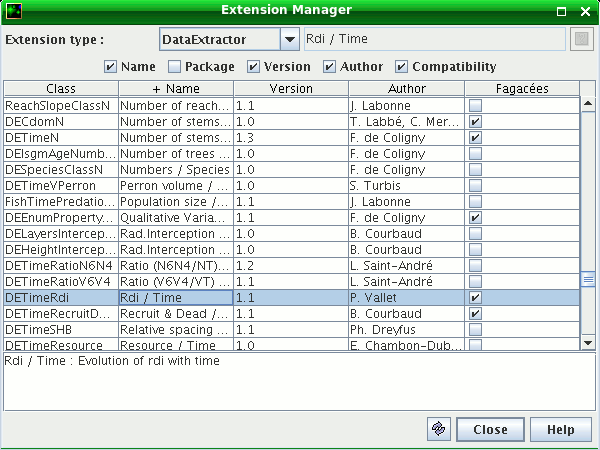
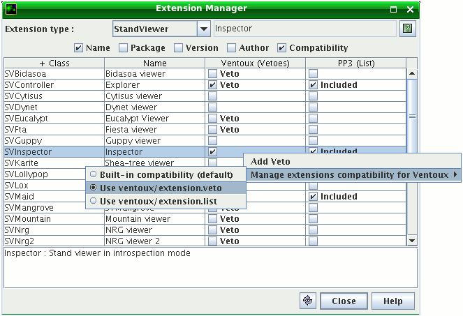

Display the list of the platform extensions (fig. 1). Possible customisation of the extensions compatibility by vetoes or with an exhaustive compatibility list for the considered model. Access by menu Tools > Extension Manager.
Choose the type of extension in the combo box, check the column names you want to see. Click or Ctrl-click on the column header to sort in ascending / descending order.
Select a line in the table to get the precise description of an extension, if an online help file is available for this extension, the green icon Help in the top right corner can show it.
 Fig. 1. The Graphical Extension Manager showing the extensions of type “Data extractor”, Rdi / Time is compatible with the model Fagacées
When a new project is loaded in the project manager, a new column is added for the model linked to the project. If several projects are opened (fig. 2), there is a column per model (ex: 2 projects Ventoux and 1 project PP3 result in 2 columns: Ventoux and PP3).
Note: If the Graphical Extension Manager is already opened when opening / closing a project, use the “Update” button to refresh it.
The extensions of the platform can evaluate their compatibility with a built-in system dealing with a referent object. The type of this referent depends on the type of the extension. Thus for example, the Data extractors and the Memorizers have a referent of type GModel (compatible with a model), while the Data renderers have a referent of type Data extractor (compatible with another extension).
 Fig. 2. Two compatibility columns: the Ventoux model is managed by Vetoes and PP3 is managed by List
A right click on the compatibility column of a model opens an Compatibility contextual menu to customise the compatibility for this model.
Built-in compatibility: the extensions evaluate their compatibility with their built-in compatibility evaluation system (default option).
Customisation with vetoes: vetoes can be set to desactivate some extensions for a considered model. This option is available for all the extensions (compatible with all kinds of referents). The extensions with a veto will not appear in the lists of extensions proposed to the end-user by the graphical user interface for the considered model.
When this option is activated, the text (Vetoes) is added in the column header, it is then possible to add / remove vetoes with the compatibility contextual menu. The vetoes are saved in a file extension.veto in the directory of the module (e.g. capsis4/bin/pp3/extension.veto). For the extensions with a veto, the text Veto appears in the compatibility column.
Customisation by list: creates an exhaustive list of extensions compatible with a given model. This option makes sure that new extensions developed by the community will not be added in the list of extensions for the considered model. This can be useful for distribution to end-users, by making a kind of stable profile.
When this option is activated, the text (List) is added in the column header and it is possible to use the Compatibility contextual menu to include / exclude extensions in the list. The list is saved in a file extension.list in the directory of the model (e.g. capsis4/bin/ventoux/extension.list). For the extensions in the list, the text Included appears in the compatibility column.
Note: for the vetoes and list management, it is possible to select several lines at the same time in the table by using Ctrl-click, Shift-click or Ctrl-A to select all.
The choice of the compatibility options (built-in, vetoes, list) is memorized at Capsis closing time and restored at next launch. When booting with the parameter -nooptions or when first booting on a new computer after an install, the following priorities are played for each model: (1) look for a file extension.list, (2) if not found, look for a file extension.veto, (3) otherwise use the built-in compatibility system.